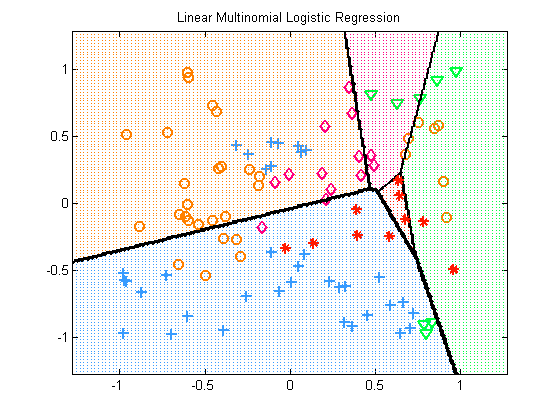
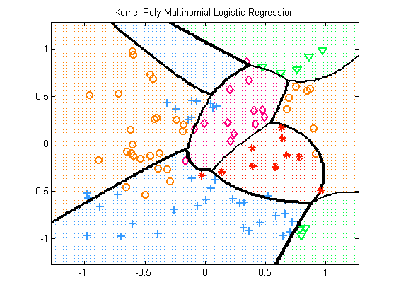
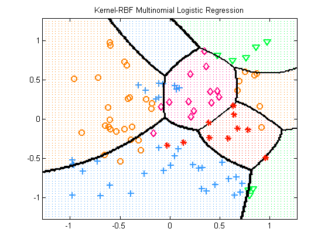

Multi-class Logistic Regression
with basis function expansion. This is a simplification of logregMultinomKernelMinfuncDemo
Contents
Setup Data
rand('state', 0); randn('state', 0); %#ok nClasses = 5; nInstances = 100; nVars = 2; [X, y] = makeData('multinomialNonlinear', nInstances, nVars, nClasses);
Settings
lambda = 1e-2; addOnes = false; polyOrder = 2; rbfScale = 1;
Linear
modelLinear = logregFitL2(X, y, lambda, addOnes);
Polynomial
Kpoly = kernelPoly(X,X,polyOrder); modelPoly = logregFitL2(Kpoly, y, lambda, addOnes);
RBF
Krbf = rbfKernel(X, X, rbfScale); modelRBF = logregFitL2(Krbf, y, lambda, addOnes);
Compute training errors
[yhat, prob] = logregPredict(modelLinear, X); %#ok trainErr_linear = mean(y~=yhat); fprintf('Training error with raw features: %2.f%%\n', trainErr_linear*100); [yhat, prob] = logregPredict(modelPoly, Kpoly); %#ok trainErr_poly = mean(y~=yhat); fprintf('Training error using a polynomial kernal of degree %d: %2.f%%\n', polyOrder, trainErr_poly*100); [yhat, prob] = logregPredict(modelRBF, Krbf); trainErr_rbf = mean(y~=yhat); fprintf('Training error using an RBF kernel with scale %d: %2.f%%\n', rbfScale, trainErr_rbf*100);
Training error with raw features: 49% Training error using a polynomial kernal of degree 2: 23% Training error using an RBF kernel with scale 1: 23%
Plot decision boundaries
plotDecisionBoundary(X, y, @(X)logregPredict(modelLinear, X)); title('Linear Multinomial Logistic Regression'); predictFcn = @(Xtest) logregPredict(modelPoly, kernelPoly(Xtest, X, polyOrder)); plotDecisionBoundary(X, y, predictFcn); title('Kernel-Poly Multinomial Logistic Regression'); predictFcn = @(Xtest) logregPredict(modelRBF, rbfKernel(Xtest, X, rbfScale)); plotDecisionBoundary(X, y, predictFcn); title('Kernel-RBF Multinomial Logistic Regression');  